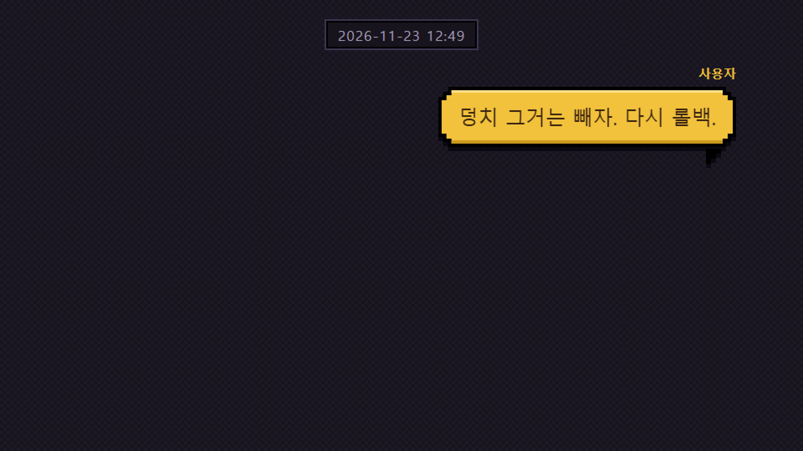
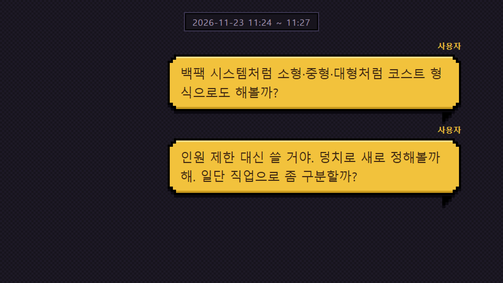
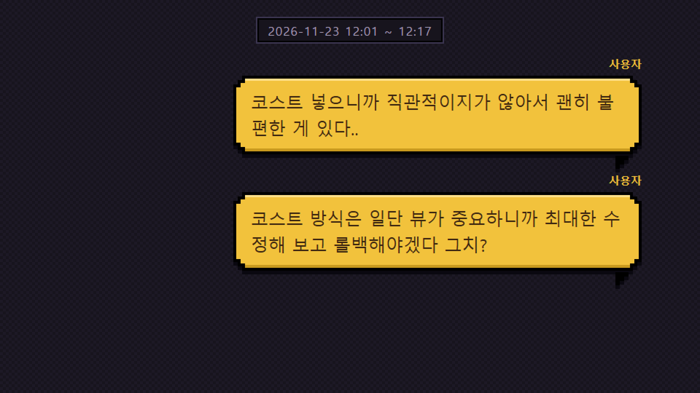
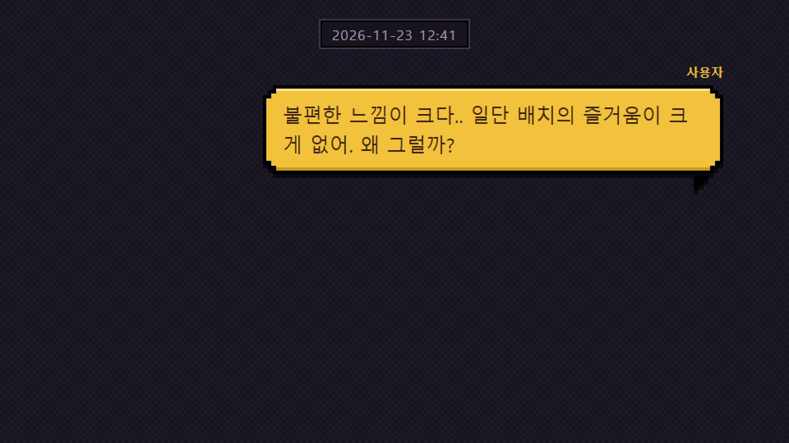
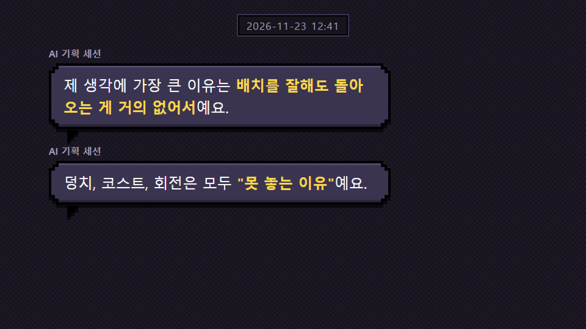
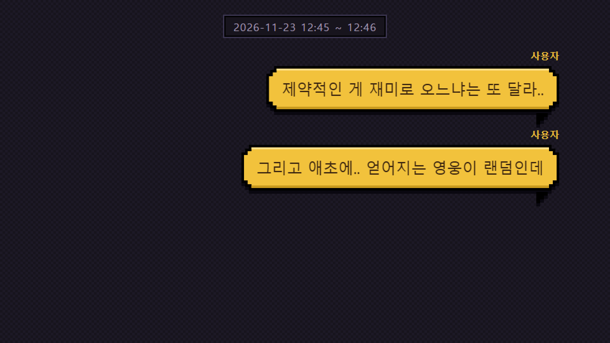
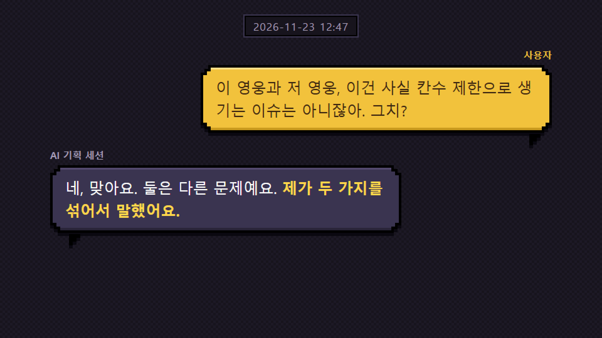
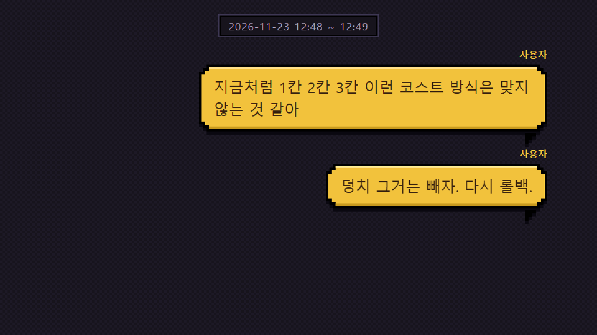
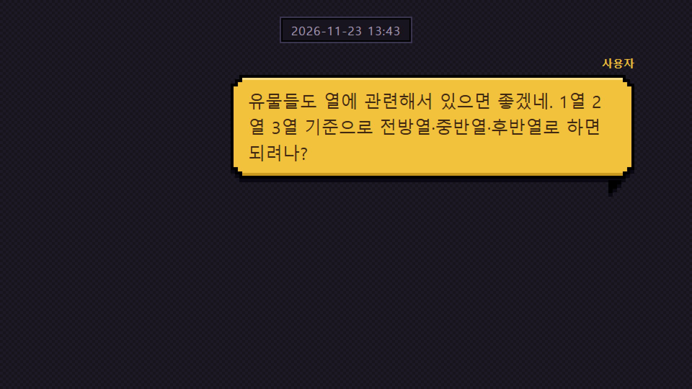
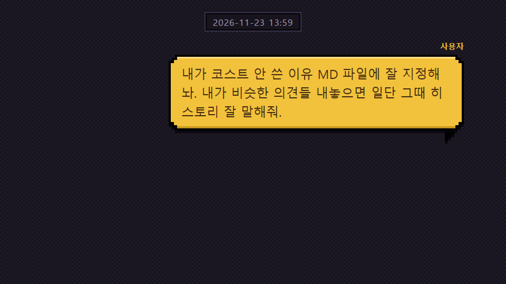

2시간 반 만들고, 버렸다
혼자 + AI 세션 팀으로 만드는 픽셀 오토배틀러. 오늘은 기획 세션과의 대화 하나

출전 인원 대신 "덩치"로 제한해 보자

불편한데… 일단 보면서 고쳐 보자. 스위치는 남겨 두고

배치의 즐거움이 크게 없어. 왜 그럴까?

(자막만)

(자막만)

(자막만)

롤백. 3×3까지 전부

칸 모양 대신 "어느 열에 섰나"에 효과를 붙였다

버린 기획도 기록한다. 비슷한 아이디어가 다시 나오면 AI가 먼저 이 기록을 꺼낸다
제약은 그 자체로는 재미가 아니다